Yogyakarta Urban
Changes: 4,831 | Area: 1038.0 hectares
🌍 Before (True Color)

 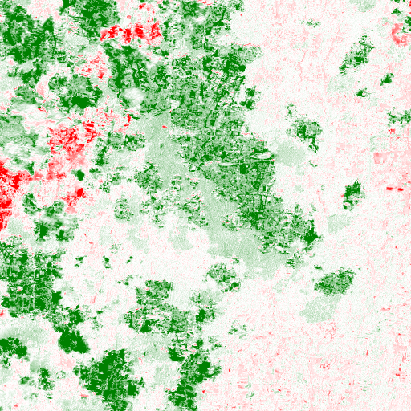
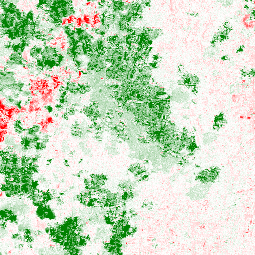
Yogyakarta Periurban
Changes: 58,478 | Area: 6868.8 hectares
🌍 Before (True Color)

 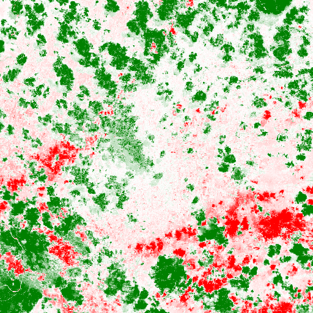
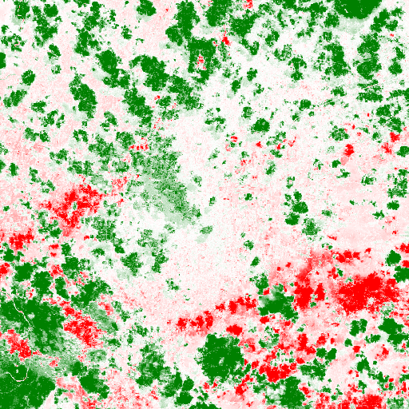
Sleman North
Changes: 23,176 | Area: 2852.0 hectares
🌍 Before (True Color)

 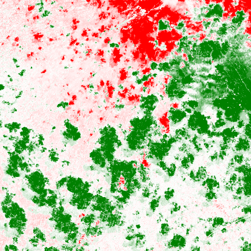
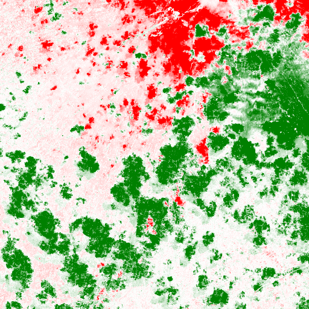
Bantul South
Changes: 42,939 | Area: 5389.3 hectares
🌍 Before (True Color)

 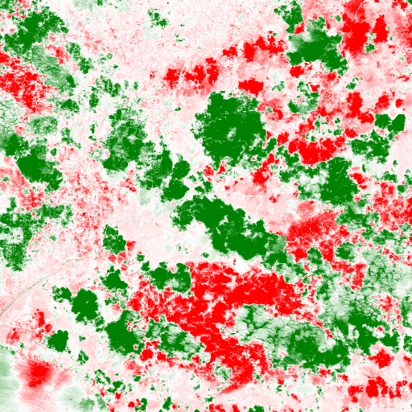
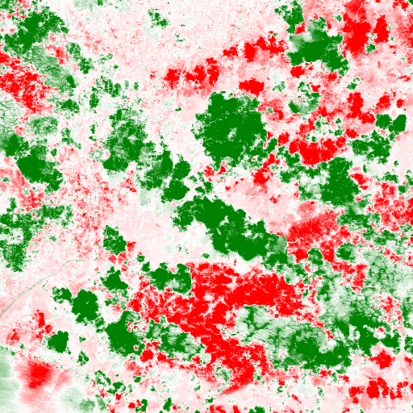
Kulonprogo West
Changes: 31,141 | Area: 3615.5 hectares
🌍 Before (True Color)
 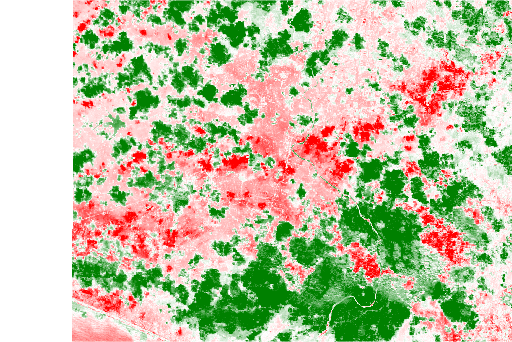
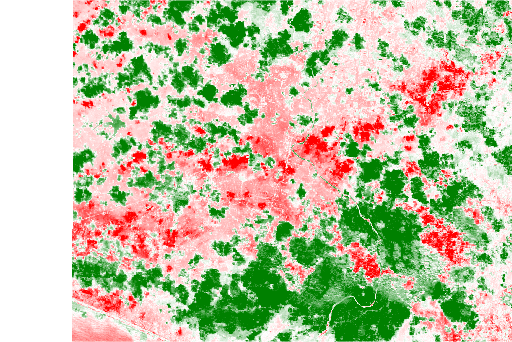
Gunungkidul East
Changes: 47,116 | Area: 4498.8 hectares
🌍 Before (True Color)
 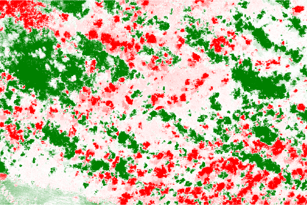
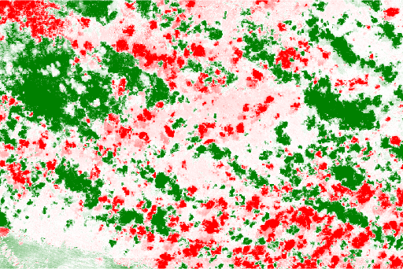
Magelang Corridor
Changes: 15,350 | Area: 1489.6 hectares
🌍 Before (True Color)
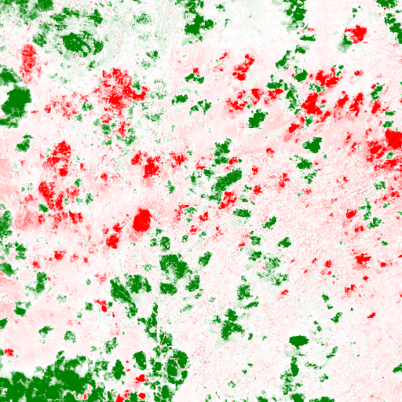
Solo Expansion
Changes: 22,683 | Area: 2420.7 hectares
🌍 Before (True Color)

 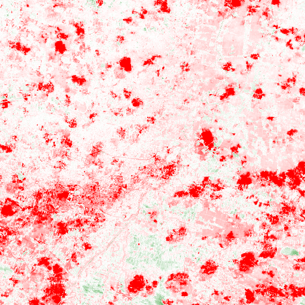
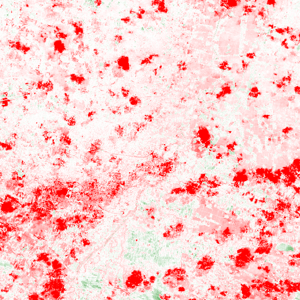
Semarang Industrial
Changes: 18,397 | Area: 2076.7 hectares
🌍 Before (True Color)

 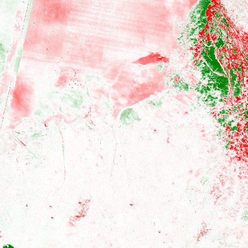
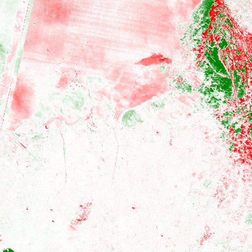
Surakarta Suburbs
Changes: 25,217 | Area: 2631.8 hectares
🌍 Before (True Color)

 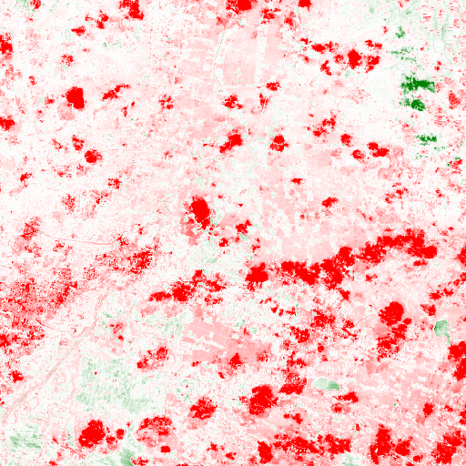
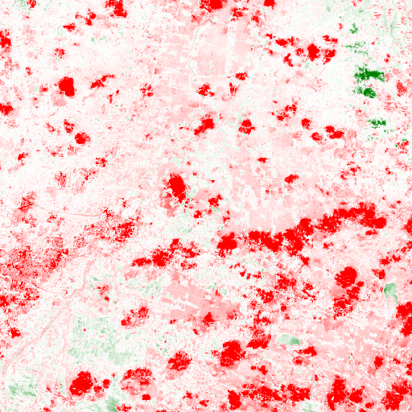